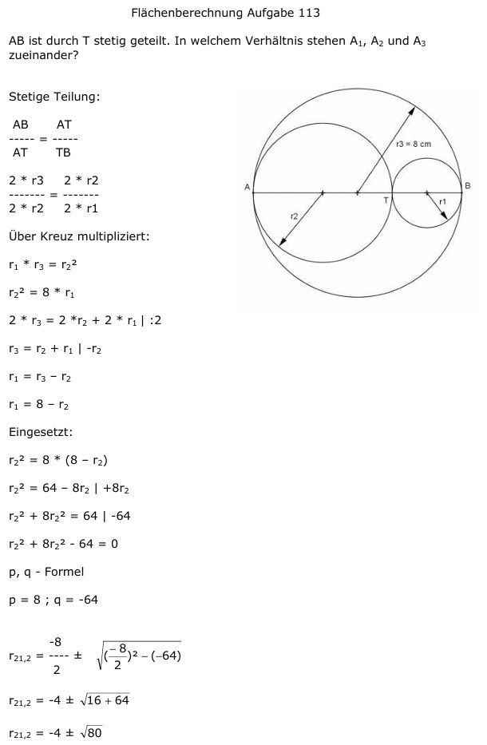
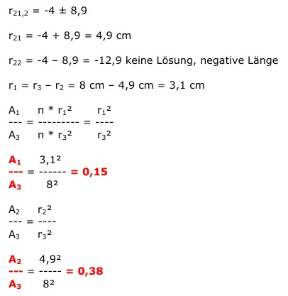

Aufgabe 113 AB ist durch T stetig geteilt. In welchem Verhältnis stehen A1, A2 und A3 zueinander?  Stetige Teilung: AB AT ----- = ----- AT TB 2 * r3 2 * r2 ------- = ------- 2 * r2 2 * r1 Über Kreuz multipliziert: r1 * r3 = r22 r22 = 8 * r1 2 * r3 = 2 *r2 + 2 * r1 |:2 r3 = r2 + r1 | -r2 r1 = r3 – r2 r1 = 8 – r2 Eingesetzt: r22 = 8 * (8 – r2) r22 = 64 – 8r2 | +8r2 r22 + 8r22 = 64 | -64 r22 + 8r22 - 64 = 0 p, q - Formel p = 8 ; q = -64  r21,2 = -4 ± 8,9 r21 = -4 + 8,9 = 4,9 cm r22 = -4 – 8,9 = -12,9 keine Lösung, negative Länge r1 = r3 – r2 = 8 cm – 4,9 cm = 3,1 cm A1 π * r12 r12 --- = --------- = ---- A3 π * r32 r32 A1 3,12 ---- = ------ = 0,15 A3 82 A2 r22 ---- = ---- A3 r32 A2 4,92 ---- = ----- = 0,38 A3 82